Как выбрать станок
Практические критерии выбора обрабатывающих центров и токарных станков — от шпинделя до автоматизации.
Как выбрать вертикальный обрабатывающий центр
10 параметров, которые определяют возможности станка: от рабочей зоны до автоматизации.
Читать →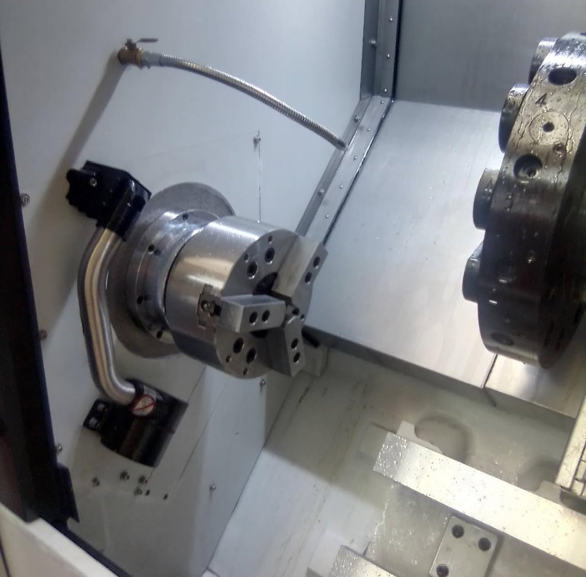
Противошпиндель: когда он нужен
Когда передача детали на второй шпиндель убирает вторую операцию и переустановку.
Читать →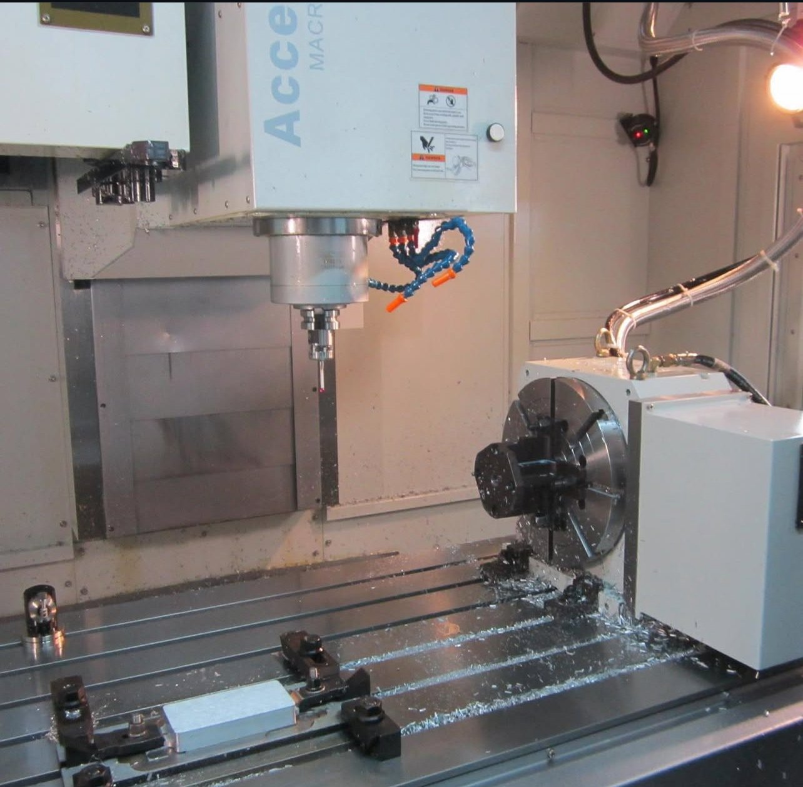
3+2 или одновременная 5-осевая обработка
Разница кинематики и применения: позиционная обработка против simultaneous 5-axis.
Читать →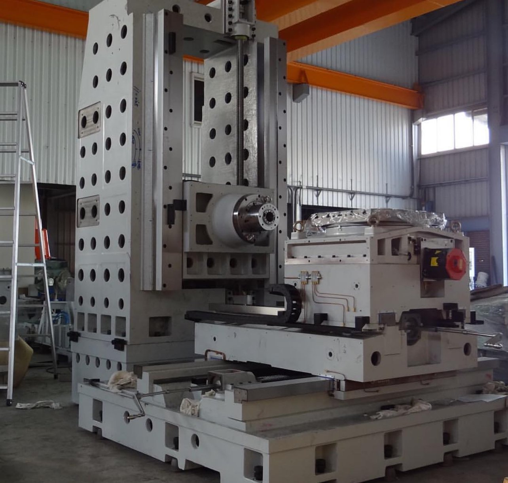
Горизонтально-расточный станок: ЧПУ или УЦИ
Как выбор управления связан с серийностью, траекторией и типом крупной детали.
Читать →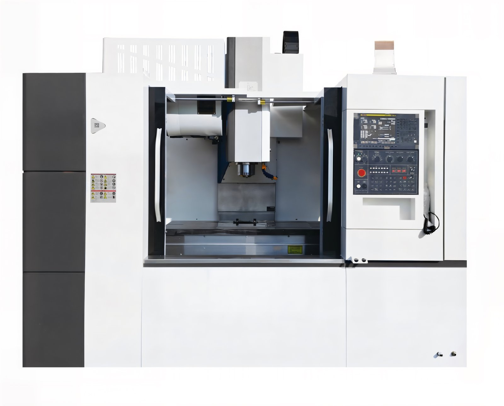
8 000, 12 000 или 15 000 об/мин: какие обороты нужны
Как связать максимальные обороты с диаметром инструмента, материалом и режимами резания.
Читать →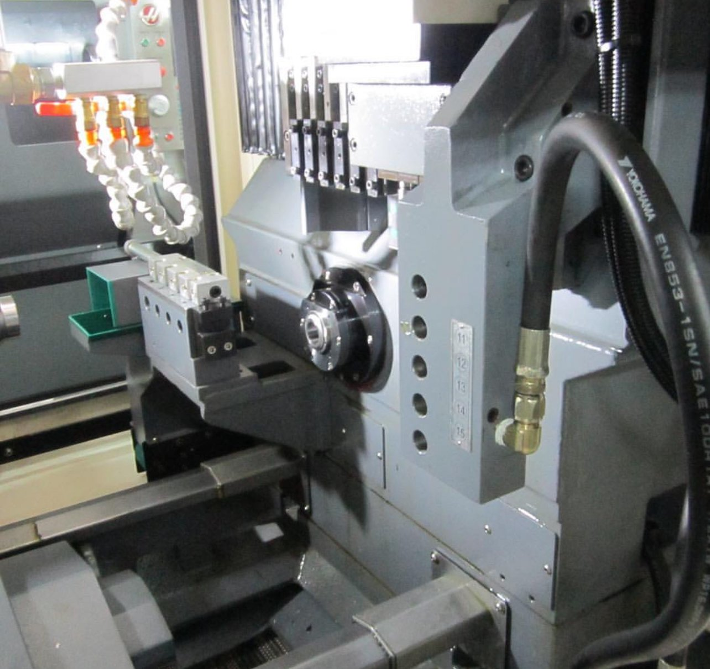
Приводной инструмент в токарном центре
Какие сверлильные и фрезерные операции можно интегрировать в токарный цикл.
Читать →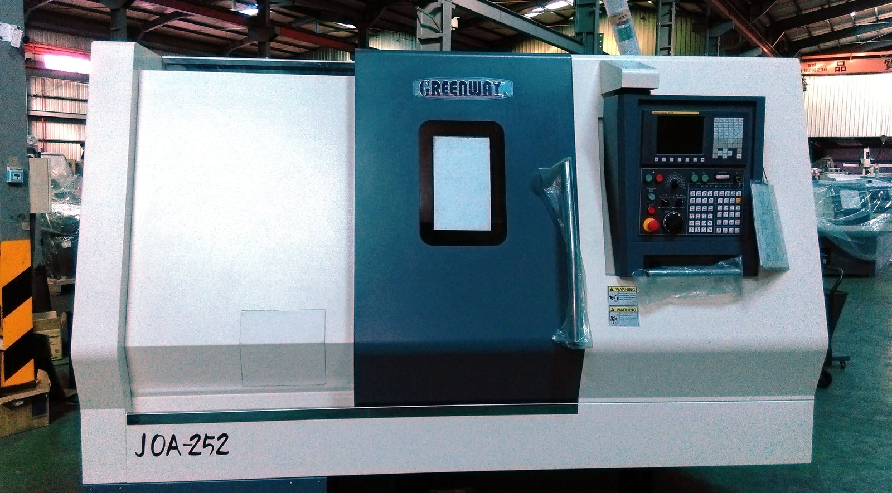
Как выбрать токарный станок по детали
Диаметр, длина, проход шпинделя, патрон, револьвер, задняя бабка и программа выпуска.
Читать →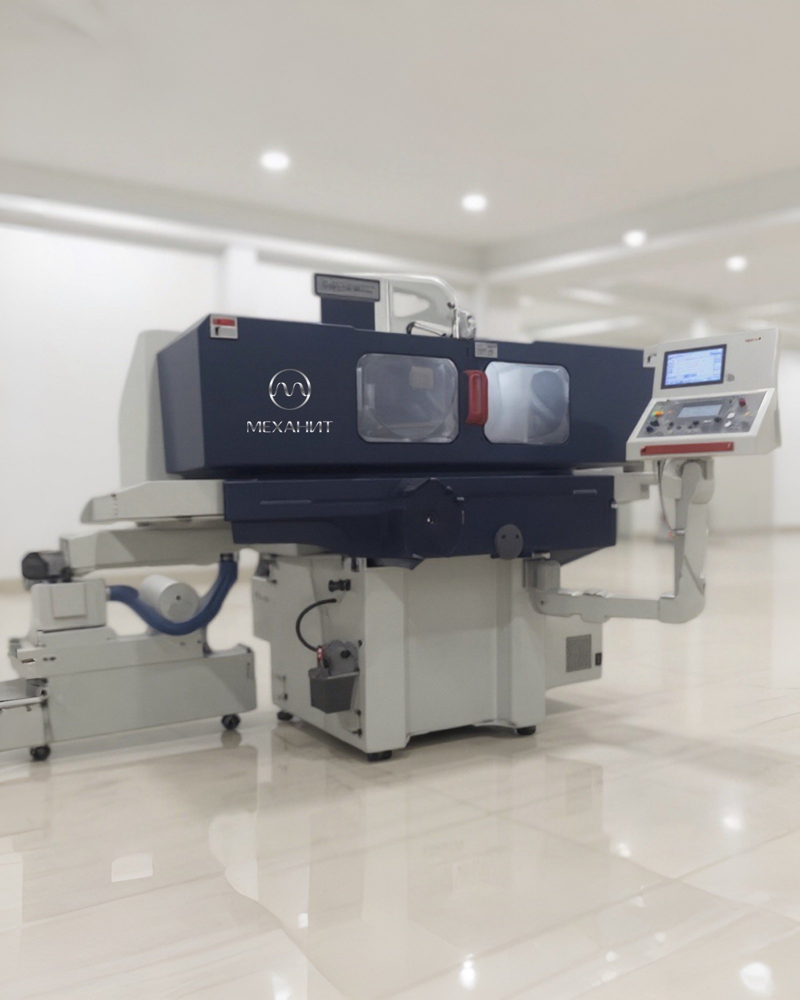
Какой шлифовальный станок выбрать
Круглошлифовальный, плоскошлифовальный или бесцентровый — выбор по геометрии и партии.
Читать →
Вертикальный или горизонтальный обрабатывающий центр
Сравнение по числу сторон детали, стружкоудалению, паллетизации и стоимости проекта.
Читать →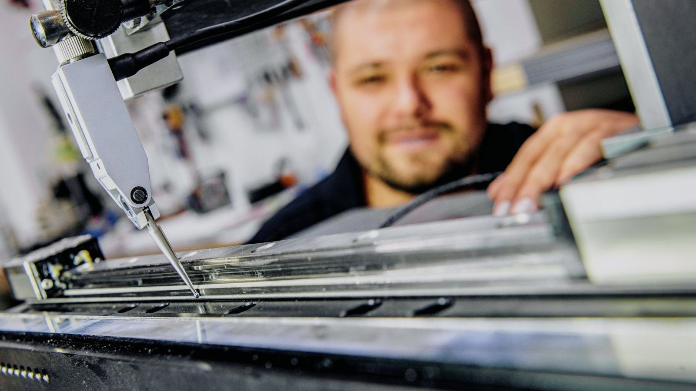
Линейные или роликовые направляющие
Сравнение динамики, жёсткости и задач тяжёлой или высокоскоростной обработки.
Читать →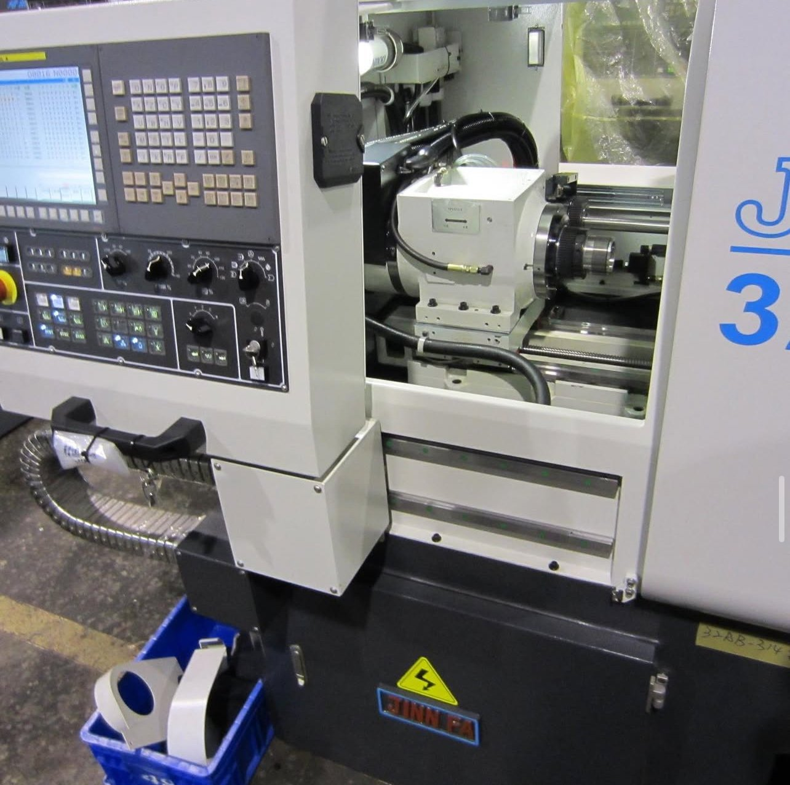
Ось Y в токарном центре
Какие операции она позволяет убрать: практика фрезерования и сверления вне оси.
Читать →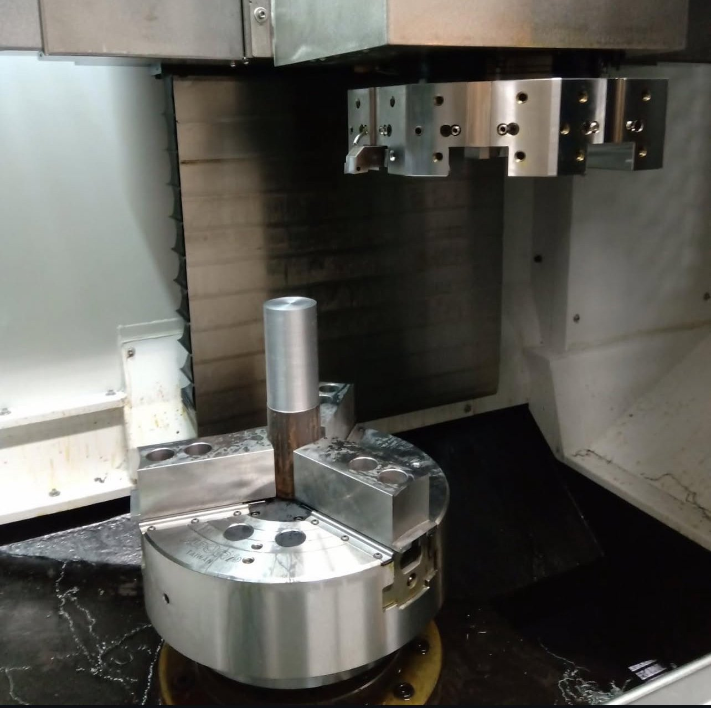
Когда действительно нужен пятиосевой центр
Критерии, при которых 5 осей сокращают установки и дают измеримый эффект.
Читать →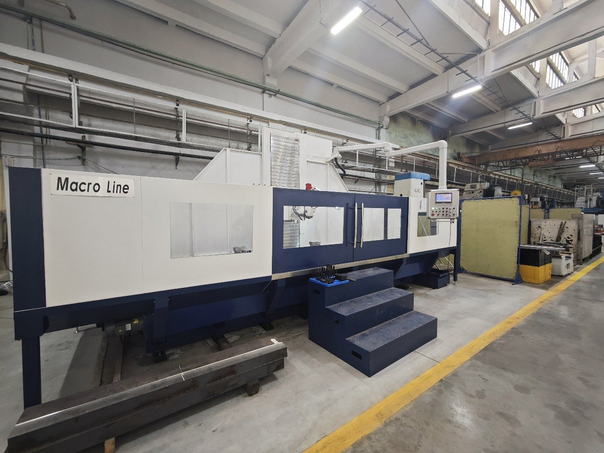
Как выбрать портальный обрабатывающий центр
Межколонное расстояние, стол, ходы, масса детали, ползун и шпиндельные головки.
Читать →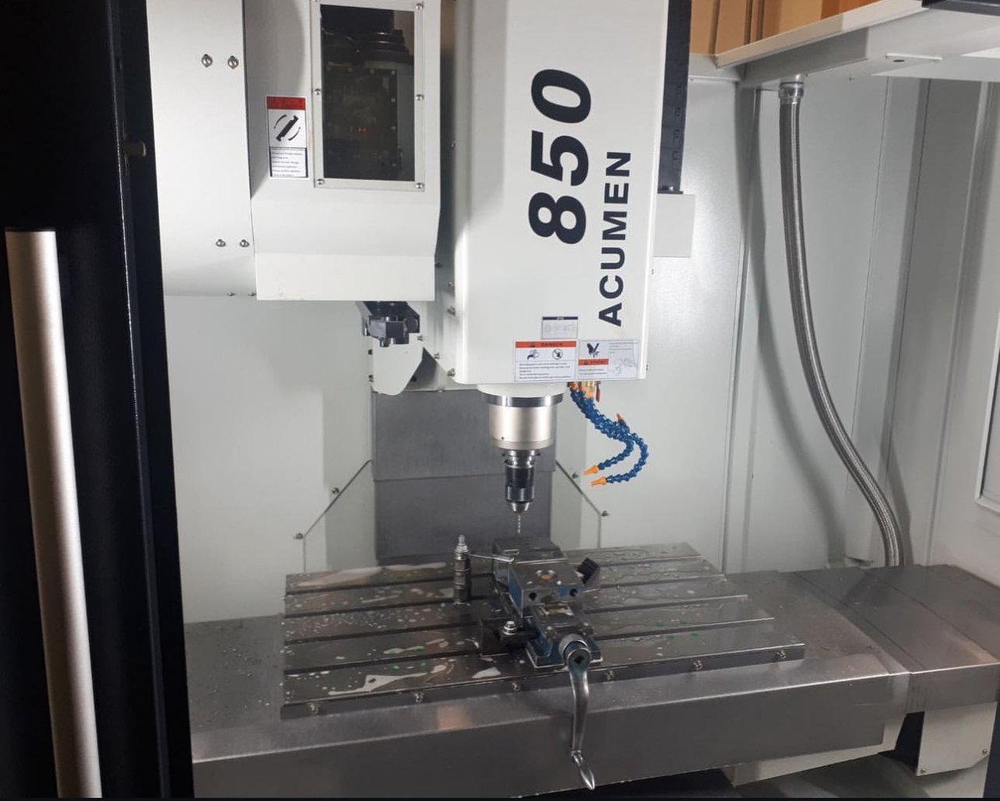
BT40 или BT50: какой конус шпинделя выбрать
Сравнение жёсткости, инструмента, оборотов и типовых задач без упрощения «один лучше другого».
Читать →Есть производственная задача?
Передайте чертёж, материал и программу выпуска. Технолог Механита поможет определить маршрут обработки и подобрать оборудование.